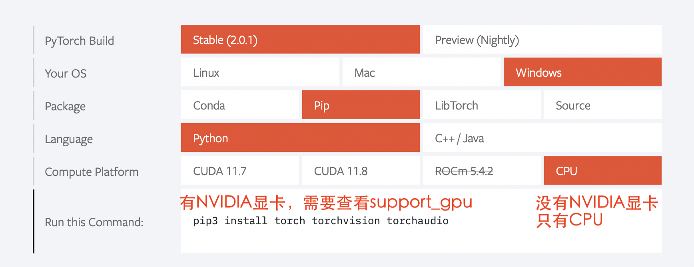

pytorch
Configuration
pytorch 安装
- 是否有显卡驱动
任务管理器 看 GPU 一般是 NVIDIA 的。
- pytorch downlaod
- pytorch V.S.cuda 查显卡决定pytorch
nvidia-smi cmds查看显卡情况
- pytorch V.S.python 查pytorch 决定python虚拟环境
conda create -n env_name python=?
-
查架构
| 查看架构 |
|---|
| import platfrorm
print(platform.uname()[4])
#>>> arm64
|


-
check
| 检查安装成功 |
|---|
| import torch
print(torch.__version__)
print(torchvision.__version__)
print(torch.cuda.is_available()) # windows
print(torch.backends.mps.is_available()) # mac
# >>> True : ok
|
torch.cuda.is_avaliable() -> False
- 检查 platform 是哪个
- 检查 gpu 是否支持cuda
- 检查显卡驱动版本
- 检查更新是否成功
concept
Autograd
Conceptually, autograd records a graph recording all of the operations that created the data as you execute operations, giving you a directed acyclic graph whose leaves are the input tensors and roots are the output tensors. By tracing this graph from roots to leaves, you can automatically compute the gradients using the chain rule.
locally disable gradient computation
完整的
初步检查模型是否有写错
| model = MyModel()
input = torch.ones(batch, input_size)
output = model(input)
print(output.shape())
|
cpu & gpu
要放进gpu的是
- model
- 损失函数
- 数据（X，label）
使用方法
| """
:meth1: .cuda()
但要注意 gpu 是否可用
"""
if torch.cuda.is_available():
model = model.cuda()
loss_fn = loss_fn.cuda()
for data in dataloader:
imgs, targets = data
if torch.cuda.is_available():
imgs, targets = imgs.cuda(), targets.cuda()
"""
:meth2: .to(device)
"""
device = torch.device('cuda' if torch.cuda.is_available() else 'cpu')
model.to(device)
loss_fn.to(device)
for data in dataloader:
imgs, targets = data
imgs, targets = imgs.to(device), target.to(device)
|
多gpu
-
选择一个运行
| device = torch.device('cuda') # default = 第一块
device = torch.device('cuda:0') # 第一块
device = torch.device('cuda:1') # 第二块
|
-
多gpu运行
训练和测试的不同
当不涉及训练时： with torch.no_grad():
反向传播的时候需要 tensor 的 requires_grad=True 才能自动求导，从而优化参数。这其中涉及 ==求导图==即内存的消耗
但是训练的时候不需要求导，在with torch.no_grad():下，所有计算得出的tensor的requires_grad都自动设置为False。
【pytorch系列】 with torch.no_grad():用法详解
model.train() & model.eval()
class:Dropout, :class:BatchNorm,
etc.
- model.train() 写在模型训练前
- model.eval()==module.train(False) 写在模型测试前
| for i in range(epoch):
model.train()
for data in traning_loader:
...
model.eval()
for data in testing_loader:
...
|
| def train(self: T, mode: bool = True) -> T:
"""
把模型调到 training mode.
Args:
- mode: Bool
default = True = 训练模式
- False = 测评模式
"""
...
return self
def eval(self: T) -> T:
"""
把模型调到 evaluation mode
"""
return self.train(False)
|
Data
Tensor
class DataSet
官方 torch.utils.data.DataSet
一个虚拟的类，All datasets that represent a map from keys to data samples
- 所有的 dataset 都必须继承它
1. 必须重写 __getitem__
2. 选择重写 __len__
3. 如果 key/indice 不是 int，对应的 DataLoader 也大改
| class Dataset(Generic[T_co]):
"""
设立数据集，包括 key/indice(default int)、data、label
要能通过 key/indice 来访问对应的 data 和 label
如果 key/indice 不是 int，对应的 DataLoader 也要大改
"""
def __getitem__(self, index) -> T_co:
raise NotImplementedError
def __add__(self, other: 'Dataset[T_co]') -> 'ConcatDataset[T_co]':
return ConcatDataset([self, other])
# No `def __len__(self)` default?
# See NOTE [ Lack of Default `__len__` in Python Abstract Base Classes ]
# in pytorch/torch/utils/data/sampler.py
|
Datalodar
torch.utils.data.DataLoader
constructs a index sampler that yields integral indices
Epoch: 所有训练样本都以输入到模型中，称为一个Epoch
Iteration: 一批样本输入到模型中，为一个Iteration
Batchsize: 批大小，主要是决定一个Epoch有多少个Iteration
样本81， Batchsize=8;
1 Epoch = 10 drop_last=True
1 Epoch = 11 drop_last=False
| class DataLoader(Generic[T_co]):
"""
“抽样式”地少量 batch 加载数据，集 “数据集 dataset”， “抽样 sampler”，
“迭代器 iterator” 于一体。可以 单或者多进程 来加载
Args:
- dataset: torch.DataSet
- batch_size: Optional[int] = samples per batch
default = 1
- shuffle: Optional[bool] = 在每个 epoch 开始的时候，对数据进行重新排序
default = False
- sampler: Union[Sampler, Iterable, None] = 自定义从数据集中取样本的策略
default = None
根据 dataset 的性质来决定
和 shuffle 互斥
- batch_sampler: Union[Sampler[Sequence], Iterable[Sequence], None]
= 与sampler类似，返回 batch 的 indice
default = None
和 batch_size, shuffle, sampler, drop_last 互斥
- num_workers: int = 有多少个子进程
default = 0 只有 main process
- drop_last: bool = 除不尽时候，要不要的最后一个 batch
default = False
- generator: torch.Generator
default = None
Warning:
- iterable-style datasets are incompatible with custom samplers first
- 设置了 batch_sampler，那么batch_size,shuffle,sampler,drop_last
就不能再制定了
"""
...
def __init__(
self, dataset: Dataset[T_co], batch_size: Optional[int] = 1,
shuffle: Optional[bool] = None,
sampler: Union[Sampler, Iterable, None] = None,
batch_sampler: Union[Sampler[Sequence],Iterable[Sequence], None] = None,
num_workers: int = 0, collate_fn: Optional[_collate_fn_t] = None,
pin_memory: bool = False, drop_last: bool = False,
timeout: float = 0,
worker_init_fn: Optional[_worker_init_fn_t] = None,
multiprocessing_context=None, generator=None,
*, prefetch_factor: Optional[int] = None,
persistent_workers: bool = False,
pin_memory_device: str = ""):
...
def __len__(self) -> int:
"""
Warning:
- `IterableDataset` 会 不正确 ！！！
- Cannot statically verify that dataset is Sized
- 往上取整， 考虑 droplast
"""
if self._dataset_kind == _DatasetKind.Iterable:
length = self._IterableDataset_len_called = len(self.dataset)
# type: ignore[assignment, arg-type]
if self.batch_size is not None:
# IterableDataset doesn't allow custom sampler or batch_sampler
from math import ceil
if self.drop_last:
length = length // self.batch_size
else:
length = ceil(length / self.batch_size)
return length
else:
return len(self._index_sampler)
...
|
nn
一些基本的东西
Containers 负责 nn 框架的构建
Module 所有 NN 的 base class
可以包括其他的 module. Modules can also contain other Modules, allowing to nest them in a tree structure.
所有 NN 模型都要 继承 subclass 它，并且要先 父类的 init
| import torch.nn as nn
import torch.nn.functional as F
class MyModel(nn.Module):
def __init__(self):
super().__init__()
self.conv1 = nn.Conv2d(1, 20, 5)
self.conv2 = nn.Conv2d(20, 20, 5)
def forward(self, x):
x = F.relu(self.conv1(x))
return F.relu(self.con2(x))
mymodel = MyModel()
y = mymodel(x)
|
| class Module:
"""
所有 nn 模型的 base class 都要继承它
"""
...
def __init__(self, *args, **kwargs) -> None:
"""
Initializes internal Module state, shared by both nn.Module and ScriptModule.
Warning:
- 如果改属性 最好用 `` super().__setattr__('a', a) ``
而不是 `` self.a = a `` 防止 Module.__setattr__ overhead
"""
...
|
torch.nn.Sequential和 torch.nn.ModuleList 的区别
torch.nn.ModuleList 就是真的一个储存模型的list
```python hlines="18 31 35 36 37 45"
class Sequential(Module):
"""
模型的序列封装，输入会按序经过里面的每一个模型，最后进行输出。
把所有的模型都封装 as a single module
如果不用 OrderedDict, 那么 str(index) 作为 key
可以通过 index 也可以通过 key 来 access
1
2
3
4
5
6
7
8
9
10
11
12
13
14
15
16
17
18
19
20
21
22
23
24
25
26
27
28
29
30
31
32
33
34
35
36
37
38
39
40
41
42
43
44
45
46
47
48
49
50
51
52
53
54
55
56
57
58
59
60
61
62
63
64
65
66
67
68
69
70
71
72
73
74
75
76
77
78
79
80
81
82
83
84
85
86
87
88
89
90
91
92
93
94
95
96
97
98
99
100
101
102
103
104
105
106
107
108
109
110
111
112
113
114
115
116
117
118
119
120
121
122
123
124
125
126
127
128
129
130
131 | Meth:
- .pop(key)
- .append()
- .extend(Sequential)
- .insert(index, Module)
- del(model)
- = model1 + model 2
Example:
>>> # 按顺序经过 Conv2d(1,20,5) - ReLU - Conv2d(20,64,5) - ReLU
>>> model = nn.Sequential(
nn.Conv2d(1,20,5),
nn.ReLU(),
nn.Conv2d(20,64,5),
nn.ReLU())
>>> print(model)
# Sequential(
(0): Conv2d(1, 20, kernel_size=(5, 5), stride=(1, 1))
(1): ReLU()
(2): Conv2d(20, 64, kernel_size=(5, 5), stride=(1, 1))
(3): ReLU())
>>> print(model[-1])
# ReLU()
>>> model.pop(-1) # 和 stack 不一样，必须传 index 或 key
# ReLU()
>>> print(model)
# Conv2d(20, 64, kernel_size=(5, 5), stride=(1, 1))
>>> model[-1] = ReLU()
>>> del(model[0])
>>> model.append(Liner(10, 3)
# Sequential(
(0): ReLU()
(1): ReLU()
(2): Linear(10, 3)
-------------------------------------------
>>> # Using Sequential with OrderedDict.
>>> from collections import OrderedDict
>>> model = nn.Sequential(OrderedDict([
('conv1', nn.Conv2d(1,20,5)),
('relu1', nn.ReLU()),
('conv2', nn.Conv2d(20,64,5)),
('relu2', nn.ReLU())
]))
>>> print(model)
# Sequential(
(conv1): Conv2d(1, 20, kernel_size=(5, 5), stride=(1, 1))
(relu1): ReLU()
(conv2): Conv2d(20, 64, kernel_size=(5, 5), stride=(1, 1))
(relu2): ReLU())
"""
...
def __init__(self, *args):
super().__init__()
if len(args) == 1 and isinstance(args[0], OrderedDict):
for key, module in args[0].items():
self.add_module(key, module)
else:
for idx, module in enumerate(args):
self.add_module(str(idx), module)
def __setitem__(self, idx: int, module: Module) -> None:
""" model[idx] = Linear(in, out) """
key: str = self._get_item_by_idx(self._modules.keys(), idx)
return setattr(self, key, module)
def __delitem__(self, idx: Union[slice, int]) -> None:
""" del(model[idx]) """
if isinstance(idx, slice):
for key in list(self._modules.keys())[idx]:
delattr(self, key)
else:
key = self._get_item_by_idx(self._modules.keys(), idx)
delattr(self, key)
# To preserve numbering
str_indices = [str(i) for i in range(len(self._modules))]
self._modules = OrderedDict(list(zip(str_indices, self._modules.values())))
def __add__(self, other) -> 'Sequential':
""" model = model1 + model2 """
if isinstance(other, Sequential):
ret = Sequential()
for layer in self:
ret.append(layer)
for layer in other:
ret.append(layer)
return ret
else:
raise ValueError('add operator supports only objects '
'of Sequential class, but {} is given.'.format(
str(type(other))))
def pop(self, key: Union[int, slice]) -> Module:
""" model.pop(key) """
v = self[key]
del self[key]
return v
...
def forward(self, input):
for module in self:
input = module(input)
return input
def append(self, module: Module) -> 'Sequential':
""" module.append(nn.Module) """
self.add_module(str(len(self)), module)
return self
def insert(self, index: int, module: Module) -> 'Sequential':
""" model.insert(nn.Module)"""
if not isinstance(module, Module):
raise AssertionError(
'module should be of type: {}'.format(Module))
n = len(self._modules)
if not (-n <= index <= n):
raise IndexError(
'Index out of range: {}'.format(index))
if index < 0:
index += n
for i in range(n, index, -1):
self._modules[str(i)] = self._modules[str(i - 1)]
self._modules[str(index)] = module
return self
def extend(self, sequential) -> 'Sequential':
""" model.extend(model1) """
for layer in sequential:
self.append(layer)
return self
|
```
nn.xxx & nn.functional.xxx
python
from torch import nn
from torch.nn inport Functional as F
layer_nn = nn.conv2d(...)
layer_F = F.conv2d(...)
Liner
| class Linear(Module):
"""
h = W^Tx+b
Args:
- in_features: Int = 入
- out_features: Int = 出
- bias: Bool
default = True
Attributes:
- weight: tensor[in_features, out_features]
- bias: tensor[1]
Examples::
>>> m = nn.Linear(20, 30)
>>> input = torch.randn(128, 20)
>>> output = m(input)
>>> print(output.size())
#res: torch.Size([128, 30])
"""
...
|
Conv
\[
\mathcal{U}(-\sqrt{k}, \sqrt{k})
\\
k = \frac{groups}{C_\text{in} * \prod_{i=0}^{1}\text{kernel\_size}[i]}
\]
\[
\text{out}(N_i, C_{\text{out}_j}) = \text{bias}(C_{\text{out}_j}) +
\sum_{k = 0}^{C_{\text{in}} - 1} \text{weight}(C_{\text{out}_j}, k) \star \text{input}(N_i, k)
\\\begin{cases} N&\text{batch size}\\ C&\text{channel}\\H&\text{height}\\W&\text{width}\\\end{cases}\\
H_{out} = \left\lfloor\frac{H_{in} + 2 \times \text{padding}[0] - \text{dilation}[0]
\times (\text{kernel\_size}[0] - 1) - 1}{\text{stride}[0]} + 1\right\rfloor\\
W_{out} = \left\lfloor\frac{W_{in} + 2 \times \text{padding}[1] - \text{dilation}[1]
\times (\text{kernel\_size}[1] - 1) - 1}{\text{stride}[1]} + 1\right\rfloor
\]
input size
nn 可以[B, C, H, W] 或 [C, H, W]
functional 只可以 [B, C, H, W]
| class Conv2d(_ConvNd):
"""
nn.Conv2d
Args:
- in_channels: int = C_{in} = 输入的通道数
- out_channels: int = C_{out} = 输出的通道数
- kernel_size: Union[int. tuple(int)] (int or tuple) = 卷积核大小
- stride: Union[int, tuple(int)] = 位移量
default = 1
- int = 竖直方向 = 水平方向
- padding: Union[int, tuple(int), str\in{{'valid', 'same'}}] = 填充 input 图像
default = 0
- int = 竖直方向 = 水平方向
- 'valid' = no padding
- 'same' = 使得 input‘shape = output’shape
- dilation: Union[int, tuple(int)]= 填充 kernel 卷积核, Spacing between kernel elements
default = 1 = no space
详看理论部分
- bias: bool 可学习的偏置
default: ``True``
Shape:
- Input = (N, C_{in}, H_{in}, W_{in}) 或 (C_{in}, H_{in}, W_{in})
- Output = (N, C_{out}, H_{out}, W_{out}) 或 (C_{out}, H_{out}, W_{out})
Attributes:
- weight: Tensor[...] = 学习出来的卷积核 kernel
详看理论部分
- bias: Tensor[out_channels] = 学习出来的偏置
需要 bias := True
详看理论部分
Examples:
>>> # non-square kernels and unequal stride and with padding and dilation
>>> m = nn.Conv2d(16, 33, (3, 5), stride=(2, 1), padding=(4, 2), dilation=(3, 1))
>>> input = torch.randn(20, 16, 50, 100)
>>> output = m(input)
"""
def __init__(
self,
in_channels: int,
out_channels: int,
kernel_size: _size_2_t,
stride: _size_2_t = 1,
padding: Union[str, _size_2_t] = 0,
dilation: _size_2_t = 1,
groups: int = 1,
bias: bool = True,
padding_mode: str = 'zeros', # TODO: refine this type
device=None,
dtype=None
) -> None:
...
super().__init__(
in_channels, out_channels, kernel_size_, stride_, padding_, dilation_,
False, _pair(0), groups, bias, padding_mode, **factory_kwargs)
...
|
| conv2d = _add_docstr(
torch.conv2d,
"""
nn.funcational.conv2d
conv2d(input, weight, bias=None, stride=1, padding=0, dilation=1, groups=1) -> Tensor
Args:
- input: Tensor[minibatch, in_channels, in_H , in_W]
- weight: Tensor[out_channels, ?, ke_H, ke_W] = 卷积核
- bias: Union[Tensor[out_channels], None]
- stride: Union[Int, Tuple(Int, Int)]
default = 1
- padding: Union[Int, Tuple(Int, Int), Str{'valid', 'same'}]
default = 0
- 'valid' = no padding
- 'same' =
- dilation: Union[Int, Tuple(Int, Int)] the spacing between kernel elements.
default = 1
Examples::
>>> # With square kernels and equal stride
>>> filters = torch.randn(8, 4, 3, 3)
>>> inputs = torch.randn(1, 4, 5, 5)
>>> F.conv2d(inputs, filters, padding=1)
"""
)
...
|
Pool
| class MaxPool2d(_MaxPoolNd):
"""
2D 最大池化
Shape:
- input = [N, C, in_H, in_W] 或 [C, in_H, in_W]
- ouptput = [N, C, out_H, out_W] 或 [C, in_H, in_W]
- kernel = [ke_H, ke_W]
公式详看理论部分
Args:
- kernel_size: Union[Int, Tuple(Int, Int)]
- stride: Union[Int, Tuple(Int, Int)]
default = kernel_size !!!
- padding: Union[Int, Tuple(Int, Int)] = 填充负无穷
用来针对除不尽的情况，也不会影响到取值（MaxPool）
- dilation: Union[Int, Tuple(Int, Int)] = controls the stride of elements in the window
- return_indices: Bool = 返回 MaxPool 中被取值的索引
default =
- ceil_mode: Bool = 要不要边界料
default = False
- False = `floor` = 不要边角料
- True = `ceil` = 要边角料 go off-bounds
应对除不尽的情况， 详看理论部分
Examples:
>>> # pool of non-square window
>>> m = nn.MaxPool2d((3, 2), stride=(2, 1))
>>> input = torch.randn(20, 16, 50, 32)
>>> output = m(input)
"""
...
def forward(self, input: Tensor):
return F.max_pool2d(input, self.kernel_size, self.stride,
self.padding, self.dilation, ceil_mode=self.ceil_mode,
return_indices=self.return_indices)
|
activation
non-inpalce
shape：[B, *] 除了必须batchsize，后面 size 都随便
softmax
\[
\text{Softmax}(x_{i}) = \frac{\exp(x_i)}{\sum_j \exp(x_j)}
\]
- 如果是稀疏向量 sparse vector（只传递非0的值），那些未传递的=原本是0的 在 softmax 里 看作 \(-\inf，\rightarrow \text{softmax}(-\inf)\rightarrow0\)
| class Softmax(Module):
"""
将某一维的值 映射到[0, 1] & sum=1。
Shape:
都可以
Args:
- dim: Int = 要进行 softmax 的维度
default =
Examples::
>>> one, zerp = nn.Softmax(dim=1), nn.Softmax(dim=0)
>>> input = torch.tensor([[-1., -1.],[2., 2.]])
>>> y1, y0 = one(input), zero(input)
# y1 = tensor([[0.5, 0.5], [0.5, 0.5]])
# y0 = tensor([[0.0474, 0.0474], [0.9526, 0.9526]])
"""
...
|
ReLU, rectified linear unit
$$
\text{ReLU}(x) = (x)^+ = \max(0, x)
$$

| class ReLU(Module):
"""
对于0以下截断
Args:
- inplace:Bool = 原地实现
default = False
Shape:
都可以
Examples::
>>> m = nn.ReLU()
>>> input = torch.tensor([[-1., -1.],[2., 2.]])
>>> output = m(input)
# output: tensor([[0., 0.], [2., 2.]])
"""
...
|
Sigmoid
$$
\text{Sigmoid}(x) = \sigma(x) = \frac{1}{1 + \exp(-x)}
$$

| class Sigmoid(Module):
"""
逐元素，映射到0-1 ，靠近0变化大，否则变化缓慢
Shape:
都可以
Examples:
>>> m = nn.Sigmoid()
>>> input = torch.tensor([[-1., -1.],[2., 2.]])
>>> output = m(input)
# output: tensor([[0.2689, 0.2689], [0.8808, 0.8808]])
"""
...
|
Normalization
Droupout
如果特征图中的相邻像素具有很强的相关性 (则 i.i.d. dropout 不会使激活正则化，否则只会导致有效学习率下降。
| class Dropout1d(_DropoutNd):
"""
随机取0，增强 feature maps 的独立性，防止过拟合。
概率 p 伯努利采样
Args:
- p: Optional[Float]
- inplace:bool
default = False
Shape:
- Input: [B, C, L] 或 [C, L]
卷积的时候：nn.Conv1d: 1D-tensor
- Output: [B, C, L] 或 [C, L]
Examples::
>>> m = nn.Dropout1d(p=0.2)
>>> input = torch.randn(20, 16, 32)
>>> output = m(input)
"""
...
class Dropout2d(_DropoutNd):
"""
随机取0，增强 feature maps 的独立性，防止过拟合。
概率 p 伯努利采样
Args:
- p: Optional[Float]
- inplace:bool
default = False
Shape:
- Input: [B, C, H, W] 或 [B, C, L]
卷积的时候：nn.Conv1d: 2D-tensor
- Output: [B, C, H, W] 或 [B, C, L]
Examples::
>>> m = nn.Dropout2d(p=0.2)
>>> input = torch.randn(20, 16, 32, 32)
>>> output = m(input)
"""
...
|
flatten
| class Flatten(Module):
"""
给定维度展平向量
Args:
- start_dim: Int = 开始的维度
default = 1
- end_dim: Int = 结束的维度
default = -1
default 就是 [B, H, W, ...] -> [B, H*W*...], 最外层不会被展平
Examples::
>>> input = torch.randn(32, 1, 5, 5)
>>> m = nn.Flatten() # 默认 0B 除外
>>> output = m(input)
torch.Size([32, 25])
>>> m = nn.Flatten(0, 2) # 自定义：最里面除外
>>> output = m(input)
torch.Size([160, 5])
>>> m = nn.Flatten(0, -1) # 全展平
"""
...
|
torch.nn.Loss & torch.Optim
| model = # 定义模型
loss_fn = # 定义 loss 算法
optimizer = # 定义 梯度迭代 的算法
""" basic """
for input, target in dataset:
output = model(input)
loss = loss_fn(output, target) # 算 loss
optimizer.zero_grad() # 清空上一轮算出来的的梯度，否则梯度会累积
loss.backward() # 通过 反向传播 计算新一轮梯度
optimizer.step() # 根据算出来的梯度 更新参数
|
| from torch import nn
from torch.optim import SGD
model = nn.Sequential(
Linear(10, 32),
ReLU(),
Linear(32, 3)
)
loss_fn = nn.L1Loss()
optimizer = SGD(model.parameters(), lr=0.01, momentum=0.9)
""" whole batch 整一个"""
for i in range(epoch):
loss_epoch = 0
for x, y in dataloader:
y_hat = model(x)
loss_epoch += loss_fn(y, y_hat)
optimizer.zero_grad()
loss_epoch.backward()
loss_epoch.step()
""" mini-batch """
|
torch.optim
构建一个优化器对象，该对象将保持当前状态，并将根据计算的梯度更新参数。
\(\text{Minimize} f(\theta)\)
maximize = False(default)\(\iff g_t\leftarrow=-\nabla f(\theta)\)
\(\(\begin{aligned}
&\textbf{关于梯度：}\nabla 是上升的方向\\[-1em]
&\rule{110mm}{0.4pt}\\
&\textbf{input}:
\theta_0 \text{ (params)}, \:
f(\theta) \text{ (objective)}, \: \textit{maximize}\\[-1em]
&\rule{110mm}{0.4pt}\\
&\hspace{5mm}\textbf{if} \: \textit{maximize}\iff \text{Maximize }f(\theta)\\
&\hspace{10mm}g_t \leftarrow +\nabla_\theta f(\theta)\\
&\hspace{5mm}\textbf{else}\iff \text{Minimize}f(\theta)\\
&\hspace{10mm}g_t \leftarrow -\nabla_\theta f(\theta)\\[-1em]
&\rule{110mm}{0.4pt}
\end{aligned}\)\)
Nesterov momentum
is based on the formula from
On the importance of initialization and momentum in deep learning__.
Adam
| class Adam(Optimizer):
"""
Args:
- params: iterable = 需要迭代的参数
- lr: Float >0 = 学习率
default = 1e-3
- betas: Tuple(Float, Float)\in[0, 1)
default = (0.9, 0.999)
"""
def __init__(self, params, lr=1e-3, betas=(0.9, 0.999), eps=1e-8,
weight_decay=0, amsgrad=False, *, foreach: Optional[bool] = None,
maximize: bool = False, capturable: bool = False,
differentiable: bool = False, fused: Optional[bool] = None):
...
...
|
SGD 随机梯度下降
SGD, Stochastic Gradient Descent(optionally with momentum)
| class SGD(Optimizer):
"""
随机梯度下降
Args:
- params: iterable = 要迭代的参数
- lr: Float >0 = 学习率
- momentum: Optional(Int) >0 = 冲量
default = 0
"""
def __init__(self, params, lr=required, momentum=0, dampening=0,
weight_decay=0, nesterov=False, *, maximize: bool = False,
foreach: Optional[bool] = None, differentiable: bool = False):
...
...
|
Adagrad, 自适应随机梯度下降
| class Adagrad(Optimizer):
"""
Adaptive Stochastic Gradient
Args:
- params: iterable = 要迭代的参数
- lr: Float >0 = 学习率
default = 1e-2
- lr_decay: Float >0
default = 0
"""
def __init__(self, params, lr=1e-2, lr_decay=0, weight_decay=0,
initial_accumulator_value=0,eps=1e-10, foreach: Optional[bool] = None,
*, maximize: bool = False,differentiable: bool = False,):
...
...
|
torch.nn.Loss
L1Loss, MAE
\[
\text{MAE} = \ell(f)= \begin{cases}\mathbb{E}\vert\hat{y_i}-y_i\vert\in\R&\text{reduction=mean} \\ \Vert\hat{y}-y\Vert_1\in\R&\text{reduction=sum}\\\vert\hat{y}-y\vert\in\R^n&\text{reduction=none}
\end{cases}
\]
| class L1Loss(_Loss):
"""
the mean absolute error (MAE)
Args:
- reduction: Optional[Str{'none', 'mean', 'sum}]
default = 'mean'
Examples::
>>> loss = nn.L1Loss()
>>> y = torch.randn(3, 5, requires_grad=True)
>>> pred = torch.randn(3, 5)
>>> l = loss(pred, y) # 计算 loss
>>> output.backward() # 回溯
"""
...
|
MSE
\[
\text{MSE} = \ell(f)= \begin{cases}\mathbb{E}(\hat{y_i}-y_i)^2\in\R&\text{reduction=mean} \\ \Vert\hat{y}-y\Vert_2\in\R&\text{reduction=sum}\\(\hat{y}-y)^2\in\R^n&\text{reduction=none}
\end{cases}
\]
| class MSELoss(_Loss):
"""
mean squared error (squared L2 norm)
Args:
- reduction: Optional[Str{'none', 'mean', 'sum}]
default = 'mean'
Examples::
>>> loss = nn.MSELoss()
>>> input = torch.randn(3, 5, requires_grad=True)
>>> target = torch.randn(3, 5)
>>> output = loss(input, target)
>>> output.backward()
"""
...
|
CELoss
torch.nn.CrossEntropyLoss()
= torch.nn.LogSoftmax + torch.nn.NLLLoss
softmax 非负化归一化 + 交叉熵
\[\begin{align}\ell(f) &=w_{y^_} * - \log \cfrac{\exp(\hat{y}^_)}{\sum_C \exp(\hat{y})}\cdot \mathbb{1}\{y^* \neq \text{ignore\_index}\}\\&=w_{y^*} * -\text{softmax}(\hat{y}) \qquad\text{ 不在忽略}
\end{align}
\\
\ell(x, y) = \begin{cases}
\sum_{n=1}^N \frac{1}{\sum_{n=1}^N w_{y_n} \cdot \mathbb{1}\{y_n \not= \text{ignore\_index}\}} l_n, &
\text{if reduction} = \text{`mean';}\\
\sum_{n=1}^N l_n, &
\text{if reduction} = \text{`sum'.}
\end{cases}\\\ell(x, y) = L = \{l_1,\dots,l_N\}^\top, \quad
l_n = - \sum_{c=1}^C w_c \log \frac{\exp(x_{n,c})}{\sum_{i=1}^C \exp(x_{n,i})} y_{n,c}
\]
| class CrossEntropyLoss(_WeightedLoss):
"""
cross entropy loss, 二分类或多分类很有用，尤其是类别不平衡
Warning:
- 输入不必先经过 softmax（保证都为正且总和=1。
因为这里会包括这个操作 = softmax->max->
Shape
- input: [C] 或 [B, C] 或 = 预测的，原始的不必经过 softmax
C: #class
- target: [1] 或 [B] = 真实的，类别，class indices
- output:
- 'none' : [1], [B]
- 'mean', 'sum' : Int 或 [1]
Args:
- weight: optional(Tensor[C]) = 权
- ignore_index: Optional[int] = 忽略的类别
只有在 target 放的是正确的**类别(1, 2, ..)**才起效
算 avg 时候 ignore 也 不算除数
- reduction: Optional[Str{'none', 'mean', 'sum}]
default = 'mean'
- label_smoothing: Optional[Float] \in [0.0, 1.0].
- default = 0.0 = no smoothing.
看论文：`Rethinking the Inception Architecture for Computer Vision`
a mixture of the original ground truth and a uniform distribution
Examples::
>>> # Example of target with class indices
>>> loss = nn.CrossEntropyLoss()
>>> input = torch.randn(3, 5, requires_grad=True)
>>> target = torch.empty(3, dtype=torch.long).random_(5)
# tensor([4, 3, 1])
>>> output = loss(input, target)
-----------------------------------------------------------
>>> # Example of target with class probabilities
>>> input = torch.randn(3, 5, requires_grad=True)
>>> target = torch.randn(3, 5).softmax(dim=1)
# tensor([[0.1190, 0.3896, 0.3429, 0.0254, 0.1231],
# [0.0963, 0.0300, 0.3308, 0.1970, 0.3459],
# [0.0920, 0.2793, 0.1674, 0.4453, 0.0159]])
>>> output = loss(input, target)
"""
...
|
Save & Load
AttributeError: Can't get attribute 'MyModel' on <module '__main__' from 'xxx.py'>
自定义的模型 必须先import进来，否则就会加载不了
| vgg16 = torchvision.models.vgg16()
class MyModel(nn.Module):
def __init__(self):
super.__init__()
self.linear1 = nn.Linear(4, 2)
self.sigmoid1 = nn.Sigmoid()
...
|
| """
:meth1: 整个模型保存
1. 内存较大
2. 在自设 architecture 的时候需要import
3. 如果里面有 GPU tensors, 就会自动上传到 GPU上
To avoid GPU RAM surge
first, torch.load(.., map_location='cpu')
then, torch.load_state_dict(...)
"""
torch.save(vgg16, './models/vgg16.pth') # save
vgg16 = torch.load('./models/vgg16.pth') # load
------------------------------------------
mymodel = MyModel()
torch.save(mymodel, './models/mymodel.pth') # save
from models import MyModel # 加载的时候必须导入或者复制自定义的类 # load
model = torch.load('./models/mymodel.pth')
>>> print(torch.load('./models/mymodel.pth'))
# MyModel(
# (linear): Linear(in_features=4, out_features=2, bias=True)
# (sigmoid): Sigmoid())
|
| """
:meth2: 以字典形式只保存参数
1. 内存较小，官方推荐
2. 加载时需要重新init model，然后把保存的参数传进去
"""
vgg16 = torchvision.models.vgg16()
torch.save(vgg16.state_dict(), './models/vgg16_state.pth') # save
vgg16 = torchvision.models.vgg16()
vgg16.load_state_dict(torch.load('./models/vgg16_state.pth')) # load
mymodel = MyModel()
torch.save(mymodel.state_dict(), './models/mymodel_state.pth')
from models import MyModel
mymodel = Mymodel()
mymode.load_state_dict('./models/mymodel_state.pth')
>>> print(torch.load('./mymodel_state.pth'))
# OrderedDict([
# ('linear.weight', tensor([[ 0.1370, -0.0558, -0.0024, -0.2526],
# [-0.2042, -0.1686, -0.1526, -0.3912]])),
# ('linear.bias', tensor([0.1713, 0.4829]))])
>>> print(model)
# MyModel(
# (linear): Linear(in_features=4, out_features=2, bias=True)
# (sigmoid): Sigmoid())
|
representation
utils.tensorboard
目前还是要先下载 tensorflow
TensorFlow installation not found - running with reduced feature set.
jupyter 使用 tensorboard
| %load_ext tensorboard # 加载扩展
%tensorboard --logdir runs # 运行
|
[在jupyter lab中使用tensorboard报错 UsageError: Line magic function
%tensorboard not found.]
-
SummaryWriter
| writer = SummaryWriter()
writer.add_image('my_image', img, 0)
for i in range(100):
writer.add_scalar('y=2x', i * 2, i)
writer close()
|
source code
| class SummaryWriter:
"""
直接在 log_dir 里写 Tensorboard 要用的数据，可以在 training loop 里直接 call，而不用减缓训练的速度。
Args:
- log_dir: str = 存放的文件夹目录。
Default = runs/**CURRENT_DATETIME_HOSTNAME**.
Notes：对每次 experiment pass in 'runs/exp1', 'runs/exp2', etc.
- comment: str = 只给默认的 log_dir 添加后缀
Notes：log_dir 改了这个就没用
Examples:
>>> writer = SummaryWriter()
# folder location: runs/May04_22-14-54_s-MacBook-Pro.local/
>>> # using the specified folder name.
>>> writer = SummaryWriter("my_experiment")
# folder location: my_experiment
>>> # with comment appended.
>>> writer = SummaryWriter(comment="LR_0.1_BATCH_16")
# folder location: runs/May04_22-14-54_s-MacBook-Pro.localLR_01_BATCH_16/
"""
def __init__(
self,
log_dir=None,
comment="",
purge_step=None,
max_queue=10,
flush_secs=120,
filename_suffix="",
):
...
def add_image(
self, tag,
img_tensor,
global_step=None,
walltime=None,
dataformats="CHW" ):
"""
写图片， 需要 ``pillow`` 包
Args:
- tag: str = 名字
- img_tensor: Union[torch.Tensor, numpy.ndarray, string,blobname = Image data
- dataformats: str = 格式：CHW, HWC, HW, WH, etc.
"""
...
def add_scalar(
self,
tag,
scalar_value,
global_step=None,
walltime=None,
new_style=False,
double_precision=False,
):
"""
画折线图
Args:
- tag: str = 名字
- scalar_value: Optional[float or string/blobname] = y 轴
- global_step: int = x 轴，一般是 gloabl step 用作画迭代的变化
"""
|
CV
一定要关注 compose 的输入和输出，要相互衔接匹配
torchvision 是用来处理==图像==的
| class Compose:
"""
用来 compose transform， 把好几个 trabsform process 组装成一个 composer
Args:
- transforms: List[transform的类]
Example:
>>> trans = transforms.Compose([
>>> transforms.CenterCrop(10), # 中心切割
>>> transforms.PILToTensor(), # 变成tensor
>>> transforms.ConvertImageDtype(torch.float), # tensor dtyte
>>> ])
>>> img_trans = trans(img)
"""
def __init__(self, transforms):
if not torch.jit.is_scripting() and not torch.jit.is_tracing():
_log_api_usage_once(self)
self.transforms = transforms
def __call__(self, img):
"""
逐层去过
"""
for t in self.transforms:
img = t(img)
return img
...
class ToTensor:
"""
转 PIL Image 或者 ndarray 变成 FloatTensor，并且 把值自动映射到01区间。
(H x W x C) [0, 255] -> (C x H x W)[0.0, 1.0]
转 target/label 为 LongTensor
用 PIL.Image.open(img_path)->PIL.image, cv2.imread(img_path)-> numpy.ndarrary 都行
- other cases: 不缩放
- PIL Image 是其它 (L, LA, P, I, F, RGB, YCbCr, RGBA, CMYK, - - ndarray 是其它 (np.uint8)
"""
def __init__(self) -> None:
_log_api_usage_once(self)
def __call__(self, pic):
"""
Args:
- pic: Union[PIL Image, numpy.ndarray]
Returns:
Tensor: torch.FloatTensor
Examples:
>>> img = Image.open(img_path)
>>> img2tensor = transforms.ToTensor()
>>> tensor_img = img2tensor(img)
"""
return F.to_tensor(pic)
...
class Normalize(torch.nn.Module):
"""
对 img Tensor 在每个 channel 正态标准化，默认 non-inplace
``output[channel] = (input[channel] - mean[channel]) / std[channel]``
Args:
- mean: sequence = Sequence of means for each channel.
- std: sequence = Sequence of standard deviations for each channel.
- inplace: bool = False, 是否 inplace
Examples:
>>> trans_norm = transforms.Normalize([mean]*channel, [std]*channel)
>>> img_norm = trans_norm.forward(img_tensor)
"""
def __init__(self, mean, std, inplace=False):
super().__init__()
_log_api_usage_once(self)
self.mean = mean
self.std = std
self.inplace = inplace
def forward(self, tensor: Tensor) -> Tensor:
"""
Args:
- tensor: Tensor
Returns:
- Tensor: 归一化之后的 img
"""
return F.normalize(tensor, self.mean, self.std, self.inplace)
...
class Resize(torch.nn.Module):
"""
Resize the input image to the given size.
Warning:
根据输入的不一样，在 downsampling 时 PIL Image 和 Tensor 的 interpolation 有不一样。
：建议：用同一个 input dtype 进行，不要混用
Args:
- size: Union[sequence, int]: = Optional[(h, w), size]
- sequence = (h, w) 按位置匹配
- int = size 短边变成size，长边按长短边的比例缩
if h > w , (h, w) = (size * h/w, size)
Example:
>>> trans_resize = transforms.resize((heiht, width))
>>> img_resize = trans_resize(img)
"""
def __init__(self, size, interpolation=InterpolationMode.BILINEAR, max_size=None, antialias="warn"):
...
def forward(self, img):
"""
Args:
- img: Optional[PIL Image, Tensor]
Returns:
Optional[PIL Image, Tensor]
"""
return F.resize(img, self.size, self.interpolation, self.max_size, self.antialias)
...
class RandomCrop(torch.nn.Module):
"""
随机裁剪
Args:
- size: Union[sequence, int]
- sequence = (h, w) -> (h, w)
- int = size -> (size, size) 正方形裁剪
- padding: Union[int, sequence, None] = 在各 border 上可选的 pad
- None(default)
- int = 四条边都填一样
- sequence[int]*2 = [left&right, top&bottom]
- sequence[int]*4 = [left, top, right, bottom] 顺时针
- pad_if_needed: boolean = 为了避免裁剪完不合 expected size
"""
def __init__(self, size, padding=None, pad_if_needed=False, fill=0, padding_mode="constant"):
...
def forward(self, img):
"""
Args:
- img: Union[PIL.Image, Tensor]
Returns:
Union[PIL.Image, Tensor]
"""
...
|
models
现在提供的是 可以自由地将==预训练的 weights== 加载到模型上。（pretrained=True被舍用）
如果需要预训练的，推荐使用指定版本，因为还提供了每种权重对应的的图像预处理的操作。
| from torchvision.models import resnet50, ResNet50_Weights
"""
ver | accu | name
Old | 76.130% | ResNet50_Weights.IMAGENET1K_V1
New | 80.858% | ResNet50_Weights.IMAGENET1K_V2
"""
# 直接看指定版本
resnet50(weights=ResNet50_Weights.IMAGENET1K_V1)
resnet50(weights=ResNet50_Weights.IMAGENET1K_V2)
# 字符串, 默认是哪个就得看文档
resnet50(weights='IMAGENET1K_V2')
resnet50(weights='DEFAULT') # = pretrained=True
resnet50(weights=None) # = pretrained=False
|
预处理图像
在使用预训练模型之前，必须==预处理图像==（以正确的分辨率/插值调整大小，应用推理变换，重新缩放值等）
现在统一提供了。
| weights = ResNet50_Weights.DEFAULT
preprocess = weights.transforms() # Weight Transforms 初始化
img_transformed = preprocess(img) # 预处理图像
|
vgg16
Very Deep Convolutional Networks for Large-Scale Image Recognition
| VGG(
(features): Sequential(
(0): Conv2d(3, 64, kernel_size=(3, 3), stride=(1, 1), padding=(1, 1))
(1): ReLU(inplace=True)
(2): Conv2d(64, 64, kernel_size=(3, 3), stride=(1, 1), padding=(1, 1))
(3): ReLU(inplace=True)
(4): MaxPool2d(kernel_size=2, stride=2, padding=0, dilation=1, ceil_mode=False)
(5): Conv2d(64, 128, kernel_size=(3, 3), stride=(1, 1), padding=(1, 1))
(6): ReLU(inplace=True)
(7): Conv2d(128, 128, kernel_size=(3, 3), stride=(1, 1), padding=(1, 1))
(8): ReLU(inplace=True)
(9): MaxPool2d(kernel_size=2, stride=2, padding=0, dilation=1, ceil_mode=False)
(10): Conv2d(128, 256, kernel_size=(3, 3), stride=(1, 1), padding=(1, 1))
(11): ReLU(inplace=True)
(12): Conv2d(256, 256, kernel_size=(3, 3), stride=(1, 1), padding=(1, 1))
(13): ReLU(inplace=True)
(14): Conv2d(256, 256, kernel_size=(3, 3), stride=(1, 1), padding=(1, 1))
(15): ReLU(inplace=True)
(16): MaxPool2d(kernel_size=2, stride=2, padding=0, dilation=1, ceil_mode=False)
(17): Conv2d(256, 512, kernel_size=(3, 3), stride=(1, 1), padding=(1, 1))
(18): ReLU(inplace=True)
(19): Conv2d(512, 512, kernel_size=(3, 3), stride=(1, 1), padding=(1, 1))
(20): ReLU(inplace=True)
(21): Conv2d(512, 512, kernel_size=(3, 3), stride=(1, 1), padding=(1, 1))
(22): ReLU(inplace=True)
(23): MaxPool2d(kernel_size=2, stride=2, padding=0, dilation=1, ceil_mode=False)
(24): Conv2d(512, 512, kernel_size=(3, 3), stride=(1, 1), padding=(1, 1))
(25): ReLU(inplace=True)
(26): Conv2d(512, 512, kernel_size=(3, 3), stride=(1, 1), padding=(1, 1))
(27): ReLU(inplace=True)
(28): Conv2d(512, 512, kernel_size=(3, 3), stride=(1, 1), padding=(1, 1))
(29): ReLU(inplace=True)
(30): MaxPool2d(kernel_size=2, stride=2, padding=0, dilation=1, ceil_mode=False)
)
(avgpool): AdaptiveAvgPool2d(output_size=(7, 7))
(classifier): Sequential(
(0): Linear(in_features=25088, out_features=4096, bias=True)
(1): ReLU(inplace=True)
(2): Dropout(p=0.5, inplace=False)
(3): Linear(in_features=4096, out_features=4096, bias=True)
(4): ReLU(inplace=True)
(5): Dropout(p=0.5, inplace=False)
(6): Linear(in_features=4096, out_features=1000, bias=True)
)
)
|
| @register_model()
@handle_legacy_interface(weights=("pretrained", VGG16_Weights.IMAGENET1K_V1))
def vgg16(*, weights: Optional[VGG16_Weights] = None, progress: bool = True, **kwargs: Any) -> VGG:
"""
VGG-16
Args:
- weights: Optional(torchvision.models.VGG16_Weights, None) = 是否使用预训练的参数
default = None
- progress: Optional(Bool = displays a progress bar of the download to stderr.
default = True.
"""
weights = VGG16_Weights.verify(weights)
return _vgg("D", False, weights, progress, **kwargs)
|
{kind=link}